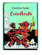

Zottelkralle

Zottelkralle ist ein ganz besonderes Erdmonster! Er kann den typischen Erdmonstergeruch nicht leiden, isst am liebsten Menschenessen und Seife und liebt Klaviermusik uber alles. Kein Wunder, dass er sich in Kallis Haus einnisten will, denn hier gibt es alles, wovon Zottelkralle traumt. Kalli findet das Monster wundervoll, obwohl Zottelkralle gefrassig, faul, chaotisch und extrem unfreundlich ist. Aber eines Tages geht Zottelkralle zu weit: Er verwandelt das ganze Haus in eine Mullhalde, und Kallis Mutter setzt ihn auf die Stra?e. Wie kann Kalli seine Eltern davon uberzeugen, dass Zottelkralle der beste Mitbewohner ist, den man sich vorstellen kann?